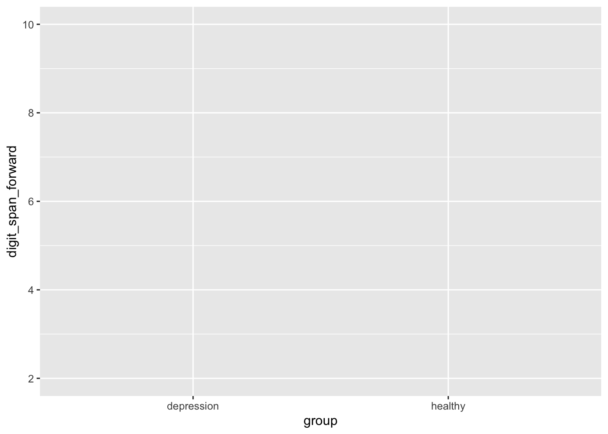
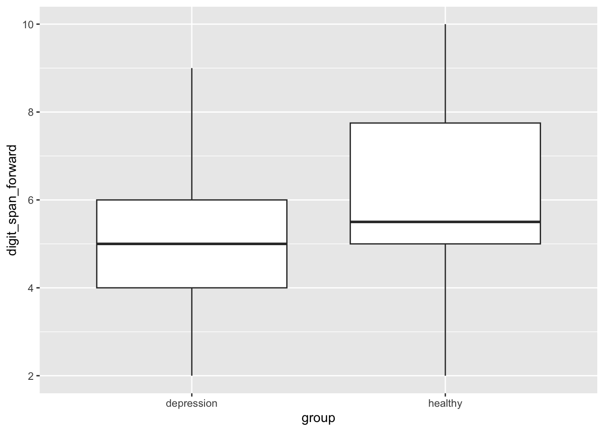
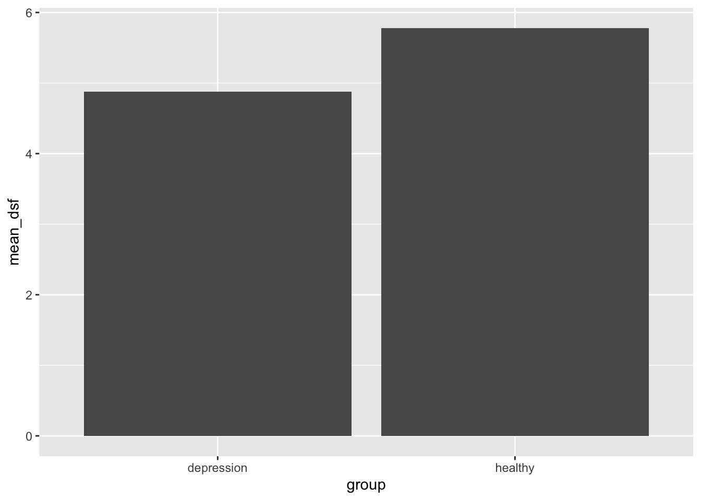
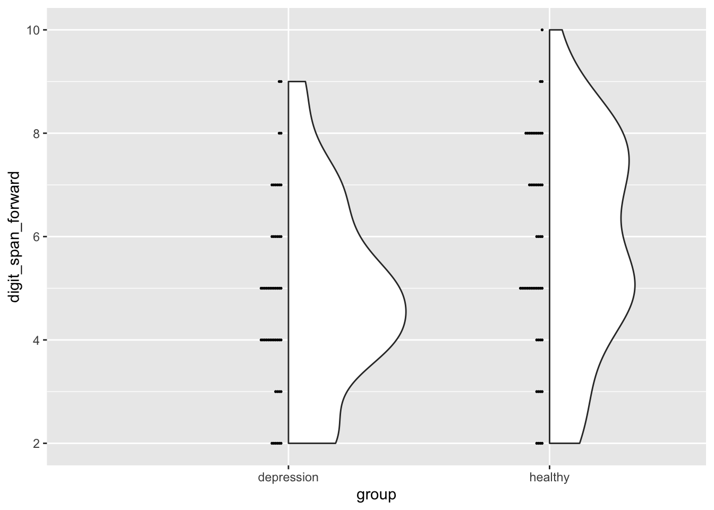
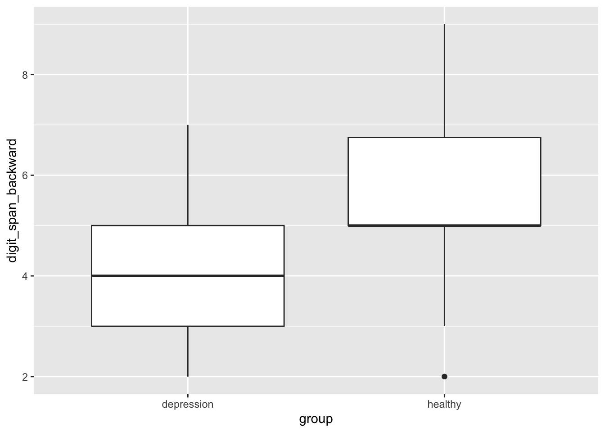
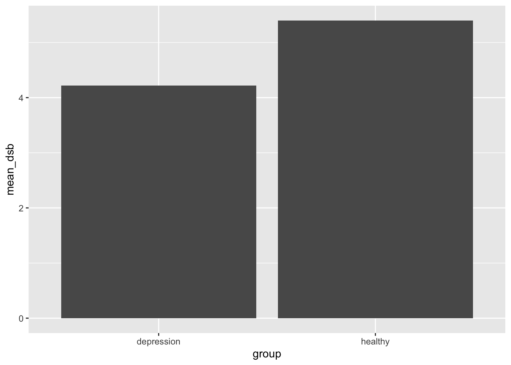
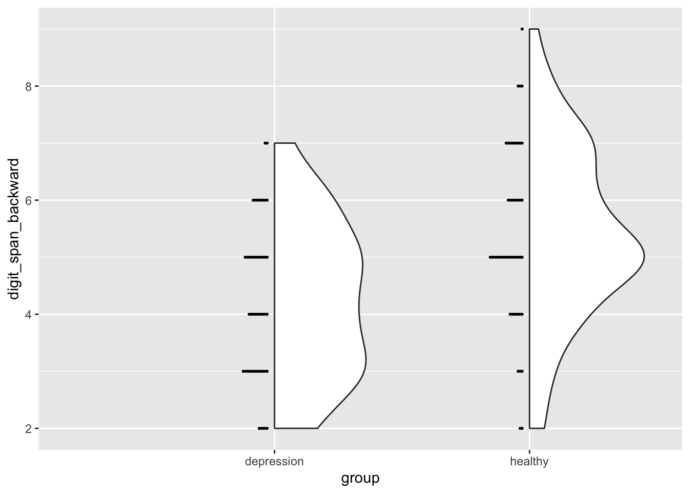

# Attaching packages: easystats 0.6.0 (red = needs update)
✖ bayestestR 0.13.1 ✖ correlation 0.8.4
✖ datawizard 0.8.0 ✖ effectsize 0.8.3
✖ insight 0.19.7 ✖ modelbased 0.8.6
✖ performance 0.10.4 ✖ parameters 0.21.1
✖ report 0.5.7 ✖ see 0.8.0
Restart the R-Session and update packages in red with `easystats::easystats_update()`.
library(effectsize)
Read data
Let’s read the data from an URL (online) using the tidyverse function read_csv.
data <-read_csv("https://raw.githubusercontent.com/mario-bermonti/talks/refs/heads/main/intro_r_cognition/data.csv")
Rows: 100 Columns: 4
── Column specification ────────────────────────────────────────────────────────
Delimiter: ","
chr (2): id, group
dbl (2): digit_span_forward, digit_span_backward
ℹ Use `spec()` to retrieve the full column specification for this data.
ℹ Specify the column types or set `show_col_types = FALSE` to quiet this message.
Inspect the data
The first step when we get data is to inspect it to understand its structure and content.
We will examine the effect of Major Depressive Disorder (MDD) on the digit span forward task.
We will begin by visualizing the data, then we will calculate descriptive statistics, and finally, we will perform inferential statistics.
Viz
Box plot
We will start by creating a box plot to visualize the data.
We will use ggplot2 to create the plot. This is one of the most popular packages for data visualization in R.
Plots with ggplot2 are built in layers, where each layer adds elements on top of the previous one. We add these layers using +, which is great it is an intuitive math operation.
Let’s build the first layer: Blank canvas
ggplot()
Now, let’s add the data to the plot.
ggplot( data,)
Now, let’s specify the x and y variables. We will display the depression status (grouping variable) on the X axis and the score on the digit_span_forward task on the Y axis.
ggplot( data,aes(x = group, y = digit_span_forward))

Now, let’s add the actual box plot to the plot.
ggplot( data,aes(x = group, y = digit_span_forward)) +geom_boxplot()

Bar plot
Bar plots are a little bit different and require us to calculate the mean before plotting.
Let’s calculate the means we will plot.
data |>summarise(mean_dsf =mean(digit_span_forward),mean_dsb =mean(digit_span_backward) )
mean_dsf
mean_dsb
5.33
4.81
Notice that we are now using a |> symbol. This is a convenient way to perform multiple sequential operations on data since you “chain” these operations with |> (pipe operator). You should read it as:
“do operation 1”
“and then (|>)”
“do operation 2”
If you think about it is a natural way to express the steps below:
take the data
and then group it by the group variable
and then calculate the mean of the digit_span_forward variable
and then calculate the mean of the digit_span_backward variable
Let’s calculate the general means.
Let’s calculate the means by group now.
means <- data |>group_by(group) |>summarise(mean_dsf =mean(digit_span_forward),mean_dsb =mean(digit_span_backward) )means
group
mean_dsf
mean_dsb
depression
4.88
4.22
healthy
5.78
5.40
Now, let’s build the bar plot. Remember we build it in layers.
ggplot(data = means,aes(x = group, y = mean_dsf)) +geom_bar(stat ="identity")

The stat = "identity" bit is a little weird, but it just tells R to plot the values as they are, without any transformation.
Violin plot
One great thing about R is that it can create all sort of beautiful and informative plots.
Violin and dot plots are great ways to visualize the distribution of the data. We will combine them into a single plot by combining ggplot2 and easystats’s see package.
ggplot( data,aes(x = group, y = digit_span_forward)) +geom_violindot()

Highlight the pattern when creating plots.
canvas(
data,
aes() # aesthetics
) +
plot_type()
Descriptive stats
As we know, summarizing the data is a crucial step in data analysis. It helps us understand the data by identifying patterns, checking for errors, and assumptions.
Let’s calculate the mean, standard deviation, minimum, and maximum of the digit_span_forward variable.
This is easily achieved in R using tidyverse’s summarise function.
General
Let’s first summarize the data without considering the groups.
data |>summarise(mean_dsf =mean(digit_span_forward),sd_dsf =sd(digit_span_forward),min_dsf =min(digit_span_forward),max_dsf =max(digit_span_forward) )
mean_dsf
sd_dsf
min_dsf
max_dsf
5.33
1.98507
2
10
By group
Now, let’s summarize the data for each group to allow group comparisons.
data |>group_by(group) |>summarise(mean_dsf =mean(digit_span_forward),sd_dsf =sd(digit_span_forward),min_dsf =min(digit_span_forward),max_dsf =max(digit_span_forward) )
group
mean_dsf
sd_dsf
min_dsf
max_dsf
depression
4.88
1.814229
2
9
healthy
5.78
2.063186
2
10
Inferential
Now that we understand the data better, we can perform inferential statistics to test if the differences we observed are statistically significant.
We will use a t-test because we are comparing the means of two groups.
R provides the t.test function which performs a t-test. Be mindful about the formula syntax used to specify the predictor and outcome.
Welch Two Sample t-test
data: digit_span_forward by group
t = -2.3164, df = 96.423, p-value = 0.02266
alternative hypothesis: true difference in means between group depression and group healthy is not equal to 0
95 percent confidence interval:
-1.6712025 -0.1287975
sample estimates:
mean in group depression mean in group healthy
4.88 5.78
Let’s format the results as a nice table.
tidy(results_ttest)
estimate
estimate1
estimate2
statistic
p.value
parameter
conf.low
conf.high
method
alternative
-0.9
4.88
5.78
-2.316364
0.022656
96.42301
-1.671202
-0.1287975
Welch Two Sample t-test
two.sided
Formula syntax
This syntax is used by most analysis functions in R and is pretty straightforward once you get used to it.
You just specify the outcome variable, followed by a ~, and then the predictor variable. You should read it as:
outcome
“predicted by”
predictor
test(
outcome ~ predictor,
data = data
)
Standardized effect size
Let’s also calculate the standardized effect size, Hedges’ g, to understand the magnitude of the effect.
Again, notice the formula syntax used to specify the predictor and outcome.
hedges_g(data = data, digit_span_forward ~ group)
Hedges_g
CI
CI_low
CI_high
-0.4597168
0.95
-0.8528339
-0.0643165
Effect of MDD on digit span backward
Let’s now complete a second exercise but focusing this time on the digit span backward task.
You will not find extensive descriptions because the code is mostly the same, except for the variable names.
Viz
Box plot
ggplot( data,aes(x = group, y = digit_span_backward)) +geom_boxplot()

Bar plot
Let’s calculate the means we will plot
means <- data |>group_by(group) |>summarise(mean_dsb =mean(digit_span_backward),mean_dsb =mean(digit_span_backward) )means
group
mean_dsb
depression
4.22
healthy
5.40
Let’s build the visualization
ggplot(data = means,aes(x = group, y = mean_dsb)) +geom_bar(stat ="identity")

Violin plot
ggplot( data,aes(x = group, y = digit_span_backward)) +geom_violindot()

Descriptive stats
General
data |>summarise(mean_dsb =mean(digit_span_backward),sd_dsb =sd(digit_span_backward),min_dsb =min(digit_span_backward),max_dsb =max(digit_span_backward) )
mean_dsb
sd_dsb
min_dsb
max_dsb
4.81
1.567956
2
9
By group
data |>group_by(group) |>summarise(mean_dsb =mean(digit_span_backward),sd_dsb =sd(digit_span_backward),min_dsb =min(digit_span_backward),max_dsb =max(digit_span_backward) )